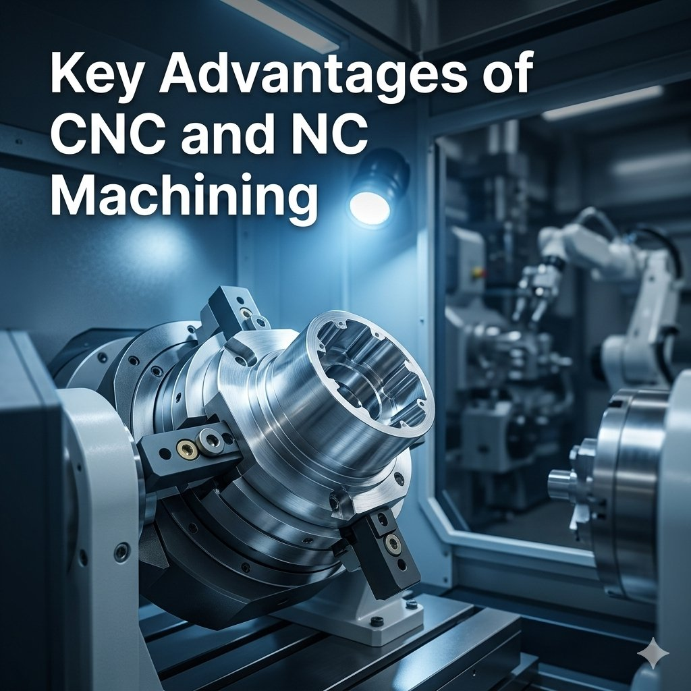

NC — Numerical Control — refers to machines operated by programmed instructions instead of manual control, while CNC — Computer Numerical Control — is an advanced evolution that uses computers to control those machines with far greater flexibility and automation. Both involve precision cutting, shaping, and forming of materials, but CNC machines can handle complex designs and execute multiple operations with minimal human intervention — making CNC machining a cornerstone of modern manufacturing that delivers higher accuracy, faster production cycles, and the ability to produce highly intricate components repeatedly without deviation. These capabilities have made CNC and NC machining indispensable across aerospace, automotive, electronics, medical, and industrial manufacturing sectors worldwide.
CNC machining operates with programmed instructions guiding every cutting tool movement, ensuring each part meets exact specifications and maintaining uniform quality across entire production batches — a level of consistency nearly impossible to achieve manually. Machines run continuously with minimal supervision, drastically improving production efficiency and allowing complex operations that would take days using conventional methods to be completed in a fraction of the time. CNC's flexibility is equally powerful: switching between tasks requires only a program update, making small batch production and rapid prototyping straightforward — with the capability to produce complex geometries, intricate patterns, and high-precision features that traditional machining simply cannot match.
Automation reduces the need for repetitive manual operations, enabling manufacturers to optimize their workforce toward quality control and problem-solving rather than repetitive machining tasks — directly lowering labor costs while maintaining output quality. CNC systems also improve workplace safety by reducing operator exposure to cutting tools, high temperatures, and machining hazards through automated operation with built-in emergency stops and monitoring systems. Consistent quality is another defining advantage: CNC repeatability ensures large production runs maintain complete uniformity — critical for assembly lines and industries requiring interchangeable parts — minimizing post-production corrections, reducing waste, and improving overall productivity at scale.
CNC machines handle metals, plastics, composites, titanium, hardened steel, and specialized alloys — broadening applications across industries with specific material performance requirements. In automotive manufacturing, CNC improves engine efficiency and assembly precision; aerospace depends on it for structural components with tight tolerances; medical equipment manufacturing relies on it for surgical instruments and implants; and electronics requires it for high-precision device components. Integration with digital manufacturing, robotics, smart factory systems, advanced simulation software, predictive maintenance, and real-time monitoring is driving the future of CNC machining — making its advantages more expansive and relevant with each technological advancement.
Attri Tech Machines Pvt. Ltd. stands as a trusted global supplier and leading manufacturer exporter of CNC and NC machining solutions, delivering high-performance components for diverse industrial applications. With advanced CNC systems, skilled engineering teams, and stringent quality control, the company maximizes manufacturing efficiency while maintaining extremely tight tolerances — ensuring parts fit perfectly and operate reliably in the most demanding industrial conditions worldwide.
View Product Details at Attri Tech Machines